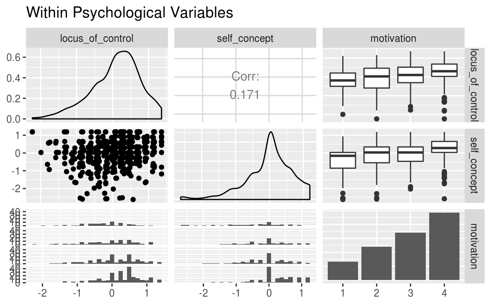
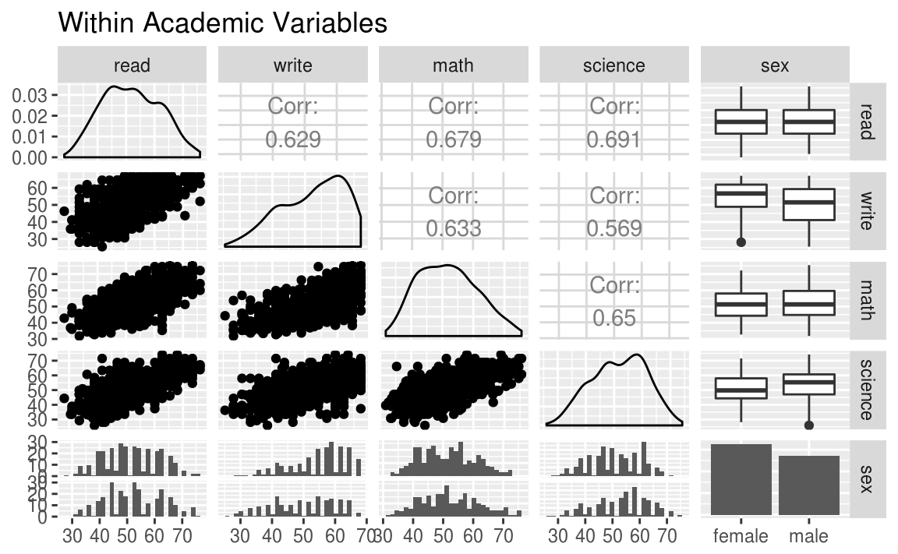
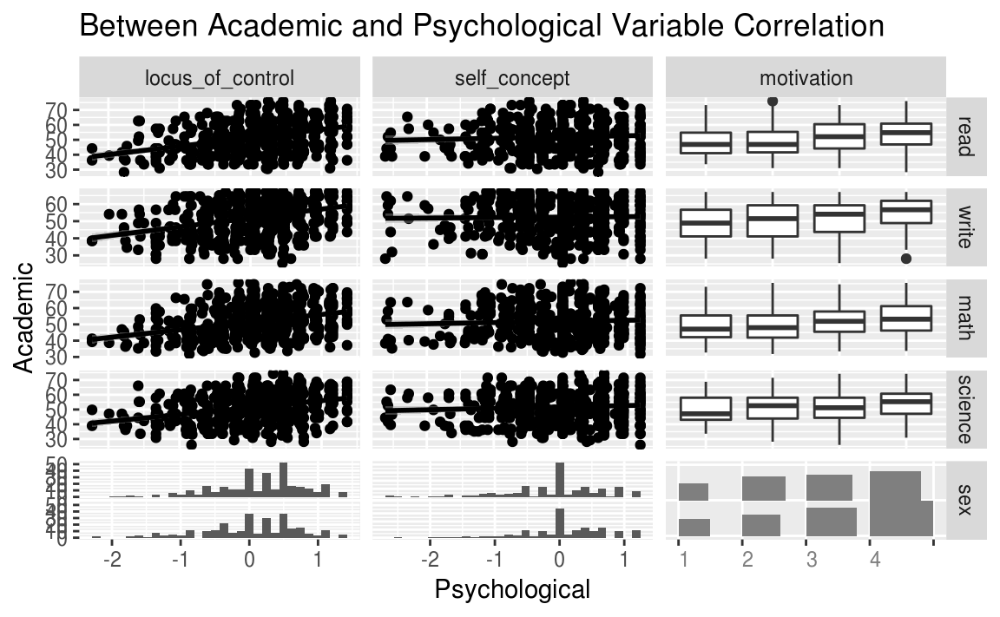
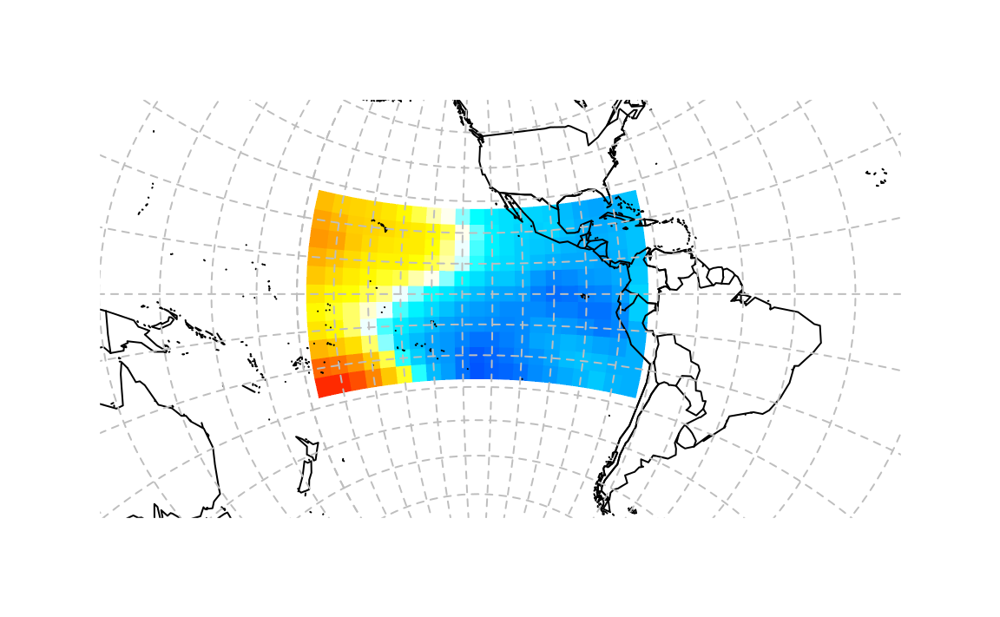

Clase 15 Correlación Canónica (CCA)
15.1 CCA vs PCA
Anteriormente, estudiamos los métodos analíticos de factores como un enfoque para comprender las fuentes clave de variación dentro de conjuntos de variables.
Hay situaciones en las que tenemos varios conjuntos de variables, y buscamos una comprensión de las dimensiones clave que se correlacionan entre conjuntos.
- El análisis de correlación canónica es uno de los métodos más antiguos y mejor conocidos para descubrir y explorar dimensiones que están correlacionadas entre conjuntos, pero no están correlacionadas dentro del conjunto.
El análisis de correlación canónica se concentra en la correlación entre una combinación lineal de variables en un conjunto y la combinación lineal de variables en otro conjunto. La idea es determinar primero el par de combinaciones lineales que tienen la combinación lineal más grande. Después, el par de combinaciones lineales que tienen correlación más grande entre todos los pares que no están correlacionados con el primero, y así sucesivamente.
A los pares de combinaciones lineales se les llama variables canónicas y a sus correlaciones se les llama correlaciones canónicas.
Las correlaciones canónicas miden qué tan fuerte es la asociación entre dos conjuntos de variables.
15.2 Variables y correlaciones canónicas
Nos interesa medir la asociación entre dos grupos de variables:
El primer grupo (de \(p\) variables) está representado por vector aleatorio \(X^{(1)}\)
El segundo grupo (de \(q\) variables) está representado por otro vector aleatorio \(X^{(2)}\)
Suponemos en lo que sigue que \(p \leq q\).
Para los vectores aleatorios \(X^{(1)}\) y \(X^{(2)}\) sea
\[ E(X^{(1)}) = \mu^{(1)},\qquad \mbox{Var}(X^{(1)}) = \Sigma_{11} \]
\[ E(X^{(2)}) = \mu^{(2)},\qquad \mbox{Var}(X^{(2)}) = \Sigma_{22} \]
\[ \mbox{Cov}\left(X^{(1)},X^{(2)}\right) = \Sigma_{12} = \Sigma_{21} \]
Ponemos
\[ X = \left(X^{(1)}, X^{(2)}\right) \]
con vector de media
\[ \mu = (\mu^{(1)},\mu^{(2)}) \]
y matriz de covarianzas
\[ \Sigma = \left[ \begin{array}{c|c} \Sigma_{11} & \Sigma_{12} \\ \hline \Sigma_{21} & \Sigma_{22} \end{array} \right] \]
Observaciones:
Las correlaciones entre pares de variables, una de \(X^{(1)}\) y la otra de \(X^{(2)}\) está contenidas en la matriz \(\Sigma_{12}\).
\(\Sigma_{12}\) es de dimensión \(pq\). Si \(p\) y \(q\) son grandes, la interpretación de \(\Sigma_{12}\) puede ser muy complicada. En este caso, es usual interpretar más fácilmente combinaciones lineales de las variables de cada grupo.
- La tarea principal del análisis canónico es resumir la asociación entre \(X^{(1)}\) y \(X^{(2)}\).
15.2.1 Combinaciones lineaes de factores
Las combinaciones lineales proveen de interpretación a conjuntos de variables. Sea
\[ \begin{eqnarray*} U &=& a^T X^{(1)} \\ V &=& b^T X^{(2)} \end{eqnarray*} \]
para un par de vectores \(a\) y \(b\). Por lo tanto,
\[ \mbox{Var}(U) = a^T \mbox{Var}(X^{(1)}) a = a^T\Sigma_{11}a \]
\[ \mbox{Var}(V) = b^T \mbox{Var}(X^{(2)}) b = b^T\Sigma_{22}b \]
\[ \mbox{Cov}(U,V) = a^T \mbox{Cov}\left(X^{(1)},X^{(2)}\right) b = a^T\Sigma_{12}b. \]
Buscamos coeficientes de los vectores \(a\) y \(b\) tales que:
\[ \mbox{Corr}(U,V) = \dfrac{a^T\Sigma_{12}b}{\sqrt{a^T\Sigma_{11}a}\sqrt{b^T\Sigma_{22}b}}. \]
Sea \(k\) entre \(1\) y \(p\leq q\), entonces al \(k\)-ésimo par de combinaciones lineales \(U_k\) y \(V_kl\) con varianzas unitarias y que maximizan la correlación entre las opciones que no estén correlacionadas con las anteriores, se les llama \(k\)-ésimo par de variables canónicas.
Suponemos que \(\Sigma_{12}\) es de rango completo, entonces
\[ \max_{u,v}\mbox{Corr}(U,V) = \rho_1^*, \]
se alcanza en las combinaciones lineales (primer par canónico):
\[ U_{1}=\underbrace{e_{1}^{T}\Sigma_{11}^{-1}}_{a_{1}^{T}}X^{(1)}, \qquad \mbox{ y } \qquad V_{1}=\underbrace{f_{1}^{T}\Sigma_{22}^{-1}}_{b_{1}^{T}}X^{(2)} \]
donde \(\mbox{Var}\left(X_i^{(1)}\right) = \sigma_{ii}\) para \(i=1,2,\ldots,p\).
El \(k\)-ésimo par de variables canónicas \(k=2,3,\ldots,p\),
\[ U_k = e_k^T\Sigma_{11}^{-1/2}X^{(1)},\qquad V_k = f_k^T\Sigma_{22}^{-1/2}X^{(2)} \]
maximiza
\[ \mbox{Corr}(U_k,V_k)=\rho_k^* \]
entre las combinaciones lineales que no están correlacionadas con las variables canónicas precedentes de \(1,2,\ldots,k-1\).
Aquí \({\rho_1^*}^2 \geq {\rho_2^*}^2 \geq \cdots \geq {\rho_p^*}^2\) son los eigenvalores de
\[ \Sigma_{11}^{-1/2} \Sigma_{12} \Sigma_{22}^{-1} \Sigma_{21} \Sigma_{11}^{-1/2}, \]
y \(e_1,e_2,\ldots,e_p\) son los eigenvectores asociados.
De la misma forma \({\rho_1^*}^2,{\rho_2^*}^2,\ldots,{\rho_p^*}^2\) son los eigenvalores asociados a los \(p\) eigenvectores de dimensión \(q\), \(f_1,f_2,\ldots,f_p\), de la matriz
\[ \Sigma_{22}^{-1/2} \Sigma_{21} \Sigma_{11}^{-1} \Sigma_{12} \Sigma_{22}^{-1/2}. \]
Propiedades: Para \(k,\,l = 1,2,\ldots,p\):
\(\mbox{Var}(U_k) = \mbox{Var}(V_k)\) = 1
\(\mbox{Cov}(U_k,U_l) = \mbox{Corr}(U_k,U_l) = 0 \quad k\neq l\)
\(\mbox{Cov}(V_k,V_l) = \mbox{Corr}(V_k,V_l) = 0 \quad k\neq l\)
- \(\mbox{Cov}(U_k,V_l) = \mbox{Corr}(U_k,V_l) = 0 \quad k\neq l\)
Si las variables originales están estandarizadas \(Z^{(1)}=\left(Z^{(1)}_1,\ldots,Z^{(1)}_p\right)\) entonces
\[ U_k = a_k^T Z^{(1)} = e_k^T \rho_{11}^{-1} Z^{(1)} \] \[ V_k = b_k^T Z^{(2)} = f_k^T \rho_{22}^{-1} Z^{(2)} \]
Aquí sucede que \(\mbox{Cov}(Z^{(1)}) = \rho_{11}\), es decir, la covarianza de \(Z^{(1)}\) la representamos como matriz de correlaciones utilizando la letra \(\rho\), y de forma similar, \(\mbox{Cov}(Z^{(2)}) = \rho_{22}\).
Además se puede ver que:
\[ \mbox{Corr}(U_k,V_k) = \rho_k^*, \quad k=1,2,\ldots,p \]
donde \({\rho_1^*}^2\geq{\rho_2^*}^2\geq\ldots\geq{\rho_p^*}^2\) son los eigenvalores de la matriz
\[ \rho_{11}^{-1/2}\rho_{12}\rho_{22}^{-1}\rho_{21}\rho_{11}^{-1/2} \]
Notemos que:
\[ \begin{eqnarray*} a_k^T(X^{(1)}-\mu^{(1)}) &=& a_{k1}(X_1^{(1)}-\mu_1^{(1)}) + \cdots+a_{kp}(X_p^{(1)}-\mu_p^{(1)})\\ &=& a_{k1}\sqrt{\sigma_{11}}\dfrac{(X_1^{(1)}-\mu_1^{(1)})}{\sqrt{\sigma_{11}}} + \cdots+a_{kp}\sqrt{\sigma_{pp}}\dfrac{(X_p^{(1)}-\mu_p^{(1)})}{\sqrt{\sigma_{pp}}}. \end{eqnarray*} \]
Por lo tanto, los coeficientes canónicos de las variables estandarizadas
\[ Z_i ^{(1)} = \dfrac{X_i^{(1)}- \mu_i^{(1)}}{\sqrt{\sigma_{ii}}} \]
están relacionados simplemente con los coeficientes canónicos de la variable original \(X_i^{(1)}\). Más específicamente, si \(a_k\) es el vector de coeficientes de la \(k\)-ésima variable canónica \(U_k\), entonces
\[ a_k^TV_{11}^{1/2} \]
es el vector de coeficientes de la \(k\)-ésima variable canónica de las variables estandarizadas \(Z^{(1)}\). Aquí \(V_{11}^{1/2}\) es la matriz diagonal con \(i\)-ésimo elemento \(\sqrt{\sigma_{ii}}\).

Al estandarizar las variables \(X^{(1)}\) y \(X^{(2)}\) y realizar análisis de correlación canónica sobre \(Z^{(1)}\) y \(Z^{(2)}\), las correlaciones canónicas
Se multiplican por un factor de \(\sqrt{\sigma_{ii}}\).
No cambian.
Deben sumar \(1\).
Ninguna de las anteriores.
15.2.2 Ejemplo simple
\[ X=\begin{pmatrix} 1 & 1 & 3 \\ 2 & 3 & 2 \\ 1 & 1 & 1 \\ 1 & 1 & 2 \\ 2 & 2 & 3 \\ 3 & 3 & 2 \\ 1 & 3 & 2 \\ 4 & 3 & 5 \\ 5 & 5 & 5 \end{pmatrix}, \qquad Y= \left(\begin{array}{rrr} 4 & 4 & −1.07846 \\ 3 & 3 & 1.214359 \\ 2 & 2 & 0.307180 \\ 2 & 3 & −0.385641 \\ 2 & 1 & −0.078461 \\ 1 & 1 & 1.61436 \\ 1 & 2 & 0.814359 \\ 2 & 1 & -0.0641016 \\ 1 & 2 & 1.5359 \\ \end{array}\right) \]
En este ejemplo, construimos la tercera columna de \(Y\) de las columnas de \(X\) con los pesos lineales \(a\) = \((0.4, 0.6, -\sqrt{0.48})\).
Algunas preguntas:
¿Cuál debería ser el primer vector de pesos canónicos para las variables \(Y\)?
¿Cuál debería ser la primera correlación canónica?
Respuestas:
El propósito del análisis de correlación canónica es (a) buscar y (b) caracterizar la redundancia lineal entre ambos conjuntos de variables.
En nuestro ejemplo simple, una de las variables en \(Y\) se puede reproducir exactamente como una combinación lineal de las tres variables en X.
El análisis de correlación canónica (si funciona correctamente) simplemente seleccionará \(y_3\) como la primera variable canónica en el conjunto \(Y\), con pesos canónicos \(b = (0,0,1)\), y recupera la combinación lineal de las variables del primer grupo utilizada para generar \(y_3\), generando \(a = (0.4, 0.6, -\sqrt{0.48})\) como los pesos canónicos para el conjunto \(X\).
La primera correlación canónica será, por supuesto, 1.
X <- matrix(c( 1,1,3,2,3,2,1,1,1,
1,1,2,2,2,3,3,3,2,1,3,2,
4,3,5,5,5,5),9,3,byrow=T)
Y <- matrix(c( 4,4,-1.07846,
3,3,1.214359,
2,2,0.307180,
2,3,-0.385641,
2,1,-0.078461,
1,1,1.61436,
1,2,0.814359,
2,1,-0.0641016,
1,2,1.535900),9,3,byrow=T)Para calcular los pesos completamente, necesitamos las matrices de varianzas y covarianzas para \(X\) e \(Y\), así como las matrices de covarianza cruzada.
S_xy <- cov(X, Y)
S_xx <- var(X)
S_yx <- cov(Y, X)
S_yy <- var(Y)
S_xy
#> [,1] [,2] [,3]
#> [1,] -0.625 -0.778 0.69679
#> [2,] -0.750 -0.556 0.95242
#> [3,] -0.125 -0.347 -0.00826Ahora que tenemos estas matrices, es fácil calcular los pesos canónicos y las correlaciones canónicas:
A <- eigen(solve(S_xx) %*% S_xy %*% solve(S_yy) %*% S_yx)$vectors
B <- eigen(solve(S_yy) %*% S_yx %*% solve(S_xx) %*% S_xy)$vectors
R <- sqrt(eigen(solve(S_yy) %*% S_yx %*% solve(S_xx) %*% S_xy)$values)A
#> [,1] [,2] [,3]
#> [1,] 0.400 0.796 -0.578
#> [2,] 0.600 -0.584 0.429
#> [3,] -0.693 -0.160 0.695B
#> [,1] [,2] [,3]
#> [1,] 1.94e-07 -0.5365 -0.835
#> [2,] -4.34e-07 0.8438 0.139
#> [3,] 1.00e+00 0.0136 -0.533R
#> [1] 1.000 0.519 0.09115.3 Ejemplo: test psicológico
Supongamos que se desea investigar asociaciones entre mediciones psicológicas y medidas de desempeño académico y contamos con datos con 600 observaciones de ocho variables. Las variables psicológicas son locus_of_control, self_concept y motivation. Las variables académicas son pruebas estandarizadas en lectura (read), redacción (write), matemáticas (math) y ciencia (science). Además, la variable female es una variable indicadora de que una estudiante es mujer.
library(ggplot2)
library(GGally)
library(CCA)
psychademic %>% head %>% knitr::kable()| locus_of_control | self_concept | motivation | read | write | math | science | sex |
|---|---|---|---|---|---|---|---|
| -0.84 | -0.24 | 4 | 54.8 | 64.5 | 44.5 | 52.6 | female |
| -0.38 | -0.47 | 3 | 62.7 | 43.7 | 44.7 | 52.6 | female |
| 0.89 | 0.59 | 3 | 60.6 | 56.7 | 70.5 | 58.0 | male |
| 0.71 | 0.28 | 3 | 62.7 | 56.7 | 54.7 | 58.0 | male |
| -0.64 | 0.03 | 4 | 41.6 | 46.3 | 38.4 | 36.3 | female |
| 1.11 | 0.90 | 2 | 62.7 | 64.5 | 61.4 | 58.0 | female |
Las variables psicológicas son:
(psych_variables <- attr(psychademic, "psychology"))
#> [1] "locus_of_control" "self_concept" "motivation"Las variables académicas son:
(academic_variables <- attr(psychademic, "academic"))
#> [1] "read" "write" "math" "science" "sex"Veamos las correlaciones entre las variables psicológicas:
ggpairs(psychademic, psych_variables, title = "Within Psychological Variables")
Y entre las académicas:
ggpairs(psychademic, academic_variables, title = "Within Academic Variables")
Veamos las correlaciones entre pares de ambos grupos de variables:
ggduo(
psychademic, psych_variables, academic_variables,
types = list(continuous = "smooth_lm"),
title = "Between Academic and Psychological Variable Correlation",
xlab = "Psychological",
ylab = "Academic"
)
También podemos analizar las correlaciones numéricamente:
datos <- psychademic %>%
mutate_at(.funs = as.numeric, .vars = vars(-sex)) %>%
mutate(sex = ifelse(sex == 'female', 1, 0))
matcor(datos[,psych_variables], datos[,academic_variables])
#> $Xcor
#> locus_of_control self_concept motivation
#> locus_of_control 1.000 0.171 0.245
#> self_concept 0.171 1.000 0.289
#> motivation 0.245 0.289 1.000
#>
#> $Ycor
#> read write math science sex
#> read 1.0000 0.629 0.6793 0.691 -0.0417
#> write 0.6286 1.000 0.6327 0.569 0.2443
#> math 0.6793 0.633 1.0000 0.650 -0.0482
#> science 0.6907 0.569 0.6495 1.000 -0.1382
#> sex -0.0417 0.244 -0.0482 -0.138 1.0000
#>
#> $XYcor
#> locus_of_control self_concept motivation read write
#> locus_of_control 1.000 0.1712 0.2450 0.3736 0.3589
#> self_concept 0.171 1.0000 0.2890 0.0607 0.0194
#> motivation 0.245 0.2890 1.0000 0.2105 0.2541
#> read 0.374 0.0607 0.2105 1.0000 0.6286
#> write 0.359 0.0194 0.2541 0.6286 1.0000
#> math 0.337 0.0536 0.1949 0.6793 0.6327
#> science 0.325 0.0698 0.1159 0.6907 0.5691
#> sex 0.113 -0.1260 0.0979 -0.0417 0.2443
#> math science sex
#> locus_of_control 0.3373 0.3246 0.1134
#> self_concept 0.0536 0.0698 -0.1260
#> motivation 0.1949 0.1159 0.0979
#> read 0.6793 0.6907 -0.0417
#> write 0.6327 0.5691 0.2443
#> math 1.0000 0.6495 -0.0482
#> science 0.6495 1.0000 -0.1382
#> sex -0.0482 -0.1382 1.0000LLevamos a cabo CCA:
cc1 <- cc(datos[,psych_variables], datos[,academic_variables])
# correlaciones canónicas
cc1$cor
#> [1] 0.464 0.167 0.104Coeficientes canónicos:
cc1[3:4]
#> $xcoef
#> [,1] [,2] [,3]
#> locus_of_control -1.254 -0.619 -0.663
#> self_concept 0.351 -1.191 0.823
#> motivation -0.421 0.675 0.670
#>
#> $ycoef
#> [,1] [,2] [,3]
#> read -0.0446 -0.00504 0.02123
#> write -0.0359 0.04198 0.09164
#> math -0.0234 0.00410 0.00923
#> science -0.0051 -0.08479 -0.10992
#> sex -0.6321 1.08910 -1.79242
Nota:
Las correlaciones anteriores son entre las variables observadas y las variables canónicas, a estas se les conoce como cargas canónicas.
Las variables canónicas son en realidad un tipo de variable latente.
- En general, el número de dimensiones canónicas es igual al número de variables en el conjunto más pequeño; sin embargo, la cantidad de dimensiones significativas puede ser aún menor. Las dimensiones canónicas, también conocidas como variables canónicas, son variables latentes que son análogas a los factores obtenidos en el análisis de factores.
En este ejemplo particular, hay tres dimensiones canónicas, de las cuales solo las dos primeras son estadísticamente significativas.
ev <- (1 - cc1$cor^2)
n <- dim(datos)[1]
p <- length(datos[,psych_variables])
q <- length(datos[,academic_variables])
k <- min(p, q)
m <- n - 3/2 - (p + q)/2
w <- rev(cumprod(rev(ev)))
d1 <- d2 <- f <- vector("numeric", k)
for (i in 1:k) {
s <- sqrt((p^2 * q^2 - 4)/(p^2 + q^2 - 5))
si <- 1/s
d1[i] <- p * q
d2[i] <- m * s - p * q/2 + 1
r <- (1 - w[i]^si)/w[i]^si
f[i] <- r * d2[i]/d1[i]
p <- p - 1
q <- q - 1
}
pv <- pf(f, d1, d2, lower.tail = FALSE)
(dmat <- cbind(WilksL = w, F = f, df1 = d1, df2 = d2, p = pv))
#> WilksL F df1 df2 p
#> [1,] 0.754 11.71 15 1635 7.79e-28
#> [2,] 0.962 2.94 8 1186 2.97e-03
#> [3,] 0.989 2.16 3 594 9.19e-02Cuando las variables en el modelo tienen desviaciones estándar muy diferentes, los coeficientes estandarizados permiten una comparación más fácil entre las variables.
Coeficientes canónicos estandarizados para variables psicológicas:
s1 <- diag(sqrt(diag(cov(datos[,psych_variables]))))
s1 %*% cc1$xcoef
#> [,1] [,2] [,3]
#> [1,] -0.841 -0.415 -0.444
#> [2,] 0.248 -0.840 0.581
#> [3,] -0.432 0.693 0.688Coeficientes canónicos estandarizados para variables académicas:
s2 <- diag(sqrt(diag(cov(datos[,academic_variables]))))
s2 %*% cc1$ycoef
#> [,1] [,2] [,3]
#> [1,] -0.4506 -0.0509 0.2145
#> [2,] -0.3489 0.4083 0.8914
#> [3,] -0.2202 0.0386 0.0869
#> [4,] -0.0495 -0.8229 -1.0669
#> [5,] -0.3150 0.5428 -0.8933Los coeficientes canónicos estandarizados se interpretan de manera análoga a la interpretación de los coeficientes de regresión estandarizados. Por ejemplo, para la variable de lectura, un aumento de la desviación estándar en lectura se refleja en una disminución de 0.45 desviaciones estándar de en la primera variable canónica del conjunto 2 cuando las otras variables en el modelo se mantienen constantes.
15.4 Ejemplo: fenómenos meteorológicos
Ejemplo de (Marc MeNugget)[https://menugget.blogspot.mx/2012/03/canonical-correlation-analysis-for.html].
Veamos ahora el uso del Análisis de Correlación Canónica (CCA) para encontrar patrones entre pares de observaciones en campos climáticos. El método produce resultados similares a los de componentes principales, pero los patrones reflejan la correlación máxima en vez de la covarianza máxima. Además, el resultado del modelo es una combinación de modelos lineales que se pueden usar para un modelo de predicción de un campo climático.
Descargamos los campos de anomalías mensuales de presión superficial del mar (SLP) y temperatura de la superficie del mar (TSM) para la región del Pacífico ecuatorial de la NOAA.
library(curl)
url_pres <- "ftp://ftp.cdc.noaa.gov/Datasets.other/hadslp/slp.mnmean.nc"
if(!file.exists("datos/slp.mnmean.nc")){
curl_fetch_disk(url_pres, path = "datos/slp.mnmean.nc", handle = new_handle(CONNECTTIMEOUT = 60))
}
url_temp <- "http://www.esrl.noaa.gov/psd/thredds/fileServer/Datasets/kaplan_sst/sst.mon.anom.nc"
if(!file.exists("datos/sst.mon.anom.nc")){
curl_fetch_disk(url = url_temp, path = "datos/sst.mon.anom.nc", handle = new_handle(CONNECTTIMEOUT = 60))
}Leemos los datos:
library(maps)
library(mapproj)
library(ncdf4)
library(CCP)
library(irlba)
nc <- nc_open(filename = "datos/slp.mnmean.nc")
slp.lon <- ncvar_get(nc, "lon")
slp.lat <- ncvar_get(nc, "lat")
slp.t <- ncvar_get(nc, "time")
slp.raw <- ncvar_get(nc, "slp")
nc_close(nc)
slp.t <- as.Date(slp.t, origin="1800-01-01")
temp <- which(slp.lon > 180)
slp.lon[temp] <- slp.lon[temp] - 360
slp.grd <- expand.grid(slp.lon, slp.lat)
colnames(slp.grd) <- c("lon", "lat")
slp <- matrix(c(slp.raw), nrow=length(slp.t), ncol<-length(slp.lon)*length(slp.lat), byrow=TRUE)
row.names(slp) <- as.character(slp.t)Calculamos anomalías en la presión superficial del mar:
anomaly <- function(y, x, level="daily"){
y <- as.matrix(y)
if(level=="monthly"){levs=unique(x$mon)}
if(level=="daily"){levs=unique(x$yday)}
levs_lookup=vector("list", length(levs))
names(levs_lookup)<-levs
for(i in 1:length(levs)){
if(level=="monthly"){levs_lookup[[i]]<-which(x$mon == names(levs_lookup[i]))}
if(level=="daily"){levs_lookup[[i]]<-which(x$yday == names(levs_lookup[i]))}
}
for(j in 1:length(levs)){
y[levs_lookup[[j]],] <- t(t(as.matrix(y[levs_lookup[[j]],])) - apply(as.matrix(y[levs_lookup[[j]],]), 2, mean, na.rm=TRUE))
}
y
}slp <- anomaly(slp, as.POSIXlt(slp.t), level="monthly")Leemos los datos de temperaturas:
nc <- nc_open(filename = "datos/sst.mon.anom.nc")
sst.lon <- ncvar_get(nc, "lon")
sst.lat <- ncvar_get(nc, "lat")
sst.t <- ncvar_get(nc, "time")
sst.raw <- ncvar_get(nc, "sst")
nc_close(nc)
sst.t <- as.Date(sst.t, origin="1800-01-01")
temp <- which(sst.lon > 180)
sst.lon[temp] <- sst.lon[temp] - 360
sst.grd <- expand.grid(sst.lon, sst.lat)
colnames(sst.grd) <- c("lon", "lat")
sst <- matrix(c(sst.raw), nrow=length(sst.t), ncol<-length(sst.lon)*length(sst.lat), byrow=TRUE)
row.names(sst) <- as.character(sst.t)Tomamos un subconjunto de los datos de acuerdo a fechas:
t.min <- as.Date("1980-01-01")
t.max1 <- as.Date("1998-12-01")
t.max2 <- as.Date("2018-04-01")
slp.t.incl <- which(slp.t >= t.min & slp.t <= t.max2)
sst.t.incl <- which(sst.t >= t.min & sst.t <= t.max2)Nos concentramos primero en la región del pacífico:
lon.lim <- c(-180, -70)
lat.lim <- c(-30, 30)
slp.grd.incl <- which(slp.grd[,1] < -70 & slp.grd[,1] > -180 & slp.grd[,2] < 30 & slp.grd[,2] > -30)
sst.grd.incl <- which(sst.grd[,1] < -70 & sst.grd[,1] > -180 & sst.grd[,2] < 30 & sst.grd[,2] > -30)Centramos cada una de las matrices:
X <- slp[slp.t.incl, slp.grd.incl]
Y <- sst[sst.t.incl, sst.grd.incl]
Y[is.na(Y)] <- 0
X_c <- scale(X, center=TRUE, scale=FALSE)
Y_c <- scale(Y, center=TRUE, scale=FALSE)Analicemos en las medias de ambas variables a través del tiempo:
X_m <- matrix(apply(X,1,mean),nrow=nrow(X_c), ncol=1)
rownames(X_m) <- rownames(X)
Y_m <- matrix(apply(Y,1,mean),nrow=nrow(Y_c), ncol=1)
rownames(Y_m) <- rownames(Y)
zran <- range(X_m, Y_m)
zlim <- c(-max(abs(zran)), max(abs(zran)))
pal <- color.palette(c("red", "yellow", "white", "cyan", "blue"), c(10,1,1,10))
colorvalues1 <- val2col(X_m, zlim, col=pal(ncol))
colorvalues2 <- val2col(Y_m, zlim, col=pal(ncol))Creamos polígonos para graficar:
#slp
spacing <- 5
slp.poly <- vector(mode="list", dim(slp.grd)[1])
for(i in seq(slp.poly)){
x=c(slp.grd[i,1]-spacing/2, slp.grd[i,1]+spacing/2, slp.grd[i,1]+spacing/2, slp.grd[i,1]-spacing/2)
y=c(slp.grd[i,2]-spacing/2, slp.grd[i,2]-spacing/2, slp.grd[i,2]+spacing/2, slp.grd[i,2]+spacing/2)
slp.poly[[i]] <- data.frame(x=x, y=y)
}
#sst
spacing <- 5
sst.poly <- vector(mode="list", dim(sst.grd)[1])
for(i in seq(sst.poly)){
x=c(sst.grd[i,1]-spacing/2, sst.grd[i,1]+spacing/2, sst.grd[i,1]+spacing/2, sst.grd[i,1]-spacing/2)
y=c(sst.grd[i,2]-spacing/2, sst.grd[i,2]-spacing/2, sst.grd[i,2]+spacing/2, sst.grd[i,2]+spacing/2)
sst.poly[[i]] <- data.frame(x=x, y=y)
}Gráfica de anomalías de presión a nivel del mar:
#mapproj settings
project="fisheye"
orientation=c(mean(lat.lim), mean(lon.lim), 0)
PAR=1
par(mai=c(0.1, 0.1, 0.1, 0.1))
map("world",project=project, orientation=orientation, par=PAR, ylim=lat.lim, xlim=lon.lim)
for(i in seq(slp.grd.incl)){
polygon(mapproject(x=slp.poly[[slp.grd.incl[i]]][,1], y=slp.poly[[slp.grd.incl[i]]][,2]), col=colorvalues1[i], border=colorvalues1[i], lwd=0.3)
}
map("world",project=project, orientation=orientation, par=PAR, fill=FALSE, add=TRUE, col="black")
map.grid(c(-180, 180, -90, 90), nx=36, ny=18, labels=FALSE, col="grey", lwd=1)
box()
Mapa de anomalías
par(mai=c(0.1, 0.1, 0.1, 0.1))
map("world",project=project, orientation=orientation, par=PAR, ylim=lat.lim, xlim=lon.lim, xaxs="i", yaxs="i")
for(i in seq(sst.grd.incl)){
polygon(mapproject(x=sst.poly[[sst.grd.incl[i]]][,1], y=sst.poly[[sst.grd.incl[i]]][,2]), col=colorvalues2[i], border=colorvalues2[i], lwd=0.3)
}
map("world",project=project, orientation=orientation, par=PAR, fill=FALSE, add=TRUE, col="black")
map.grid(c(-180, 180, -90, 90), nx=36, ny=18, labels=FALSE, col="grey", lwd=1)
box()Ahora hacemos el análisis de correlación canónica. Primero calculamos la covarianza entre \(X\) y \(Y\):
cov4gappy <- function(F1, F2=NULL){
if(is.null(F2)){
F1 <- as.matrix(F1)
F1_val<-replace(F1, which(!is.na(F1)), 1)
F1_val<-replace(F1_val, which(is.na(F1_val)), 0)
n_pairs=(t(F1_val)%*%F1_val)
F1<-replace(F1, which(is.na(F1)), 0)
cov_mat <- (t(F1)%*%F1)/n_pairs
cov_mat <- replace(cov_mat, which(is.na(cov_mat)), 0)
}
if(!is.null(F2)){
if(dim(F1)[1] == dim(F2)[1]){
F1 <- as.matrix(F1)
F2 <- as.matrix(F2)
F1_val<-replace(F1, which(!is.na(F1)), 1)
F1_val<-replace(F1_val, which(is.na(F1_val)), 0)
F2_val<-replace(F2, which(!is.na(F2)), 1)
F2_val<-replace(F2_val, which(is.na(F2_val)), 0)
n_pairs=(t(F1_val)%*%F2_val)
F1<-replace(F1, which(is.na(F1)), 0)
F2<-replace(F2, which(is.na(F2)), 0)
cov_mat <- (t(F1)%*%F2)/n_pairs
cov_mat <- replace(cov_mat, which(is.na(cov_mat)), 0)
} else {
print("ERROR; matrices columns not of the same lengths")
}
}
cov_mat
}
exp.mat<-function(MAT, EXP, tol=NULL){
MAT <- as.matrix(MAT)
matdim <- dim(MAT)
if(is.null(tol)){
tol=min(1e-7, .Machine$double.eps*max(matdim)*max(MAT))
}
if(matdim[1]>=matdim[2]){
svd1 <- svd(MAT)
keep <- which(svd1$d > tol)
res <- t(svd1$u[,keep]%*%diag(svd1$d[keep]^EXP, nrow=length(keep))%*%t(svd1$v[,keep]))
}
if(matdim[1]<matdim[2]){
svd1 <- svd(t(MAT))
keep <- which(svd1$d > tol)
res <- svd1$u[,keep]%*%diag(svd1$d[keep]^EXP, nrow=length(keep))%*%t(svd1$v[,keep])
}
return(res)
}F1 <- as.matrix(X_c)
F2 <- as.matrix(Y_c)
F1 <- as.matrix(F1)
F1_val<-replace(F1, which(!is.na(F1)), 1)
F1_val<-replace(F1_val, which(is.na(F1_val)), 0)
n_pairs=(t(F1_val)%*%F1_val)
F1<-replace(F1, which(is.na(F1)), 0)
cov_mat1 <- (t(F1)%*%F1)/n_pairs
cov_mat1 <- replace(cov_mat1, which(is.na(cov_mat1)), 0)
F2 <- as.matrix(F2)
F2_val<-replace(F2, which(!is.na(F2)), 1)
F2_val<-replace(F2_val, which(is.na(F2_val)), 0)
n_pairs=(t(F2_val)%*%F2_val)
F2<-replace(F2, which(is.na(F2)), 0)
cov_mat2 <- (t(F2)%*%F2)/n_pairs
cov_mat2 <- replace(cov_mat2, which(is.na(cov_mat2)), 0)
L1 <- irlba(cov_mat1, nu=5, nv=5)
L2 <- irlba(cov_mat2, nu=5, nv=5)
A1_coeff <- replace(F1, which(is.na(F1)), 0)%*%L1$u[,1:5]
A1_norm <- F1_val%*%(L1$u[,1:5]^2)
A1=A1_coeff/A1_norm
A2_coeff <- replace(F2, which(is.na(F2)), 0)%*%L2$u[,1:5]
A2_norm <- F2_val%*%(L2$u[,1:5]^2)
A2=A2_coeff/A2_norm
x <- A1[,1:5] %*% exp.mat(diag(L1$d[1:5]), -0.5)
y <- A2[,1:5] %*% exp.mat(diag(L2$d[1:5]), -0.5)Hacemos descomposición en valores singulares:
xdim <- dim(t(x))
ydim <- dim(t(y))
mindim=min(xdim[2], ydim[2])
xcols <- 1:xdim[2]
ycols <- (xdim[2]+1):(xdim[2]+ydim[2])
Sxx <- cov4gappy(t(x))
Sxy <- cov4gappy(t(x),t(y))
Syy <- cov4gappy(t(y))
svd1 <- svd(exp.mat(Syy, -0.5) %*% t(Sxy) %*% exp.mat(Sxx, -0.5))
A <- exp.mat(Sxx, -0.5) %*% svd1$v
B <- exp.mat(Syy, -0.5) %*% svd1$uVeamos las variables canónicas:
V <- t(x) %*% A
W <- t(y) %*% B
rho=NA*1:mindim
for(i in 1:mindim){
rho[i] <- cor(as.vector(W[,i]), as.vector(V[,i]), use="pairwise")
}
# A test of CCA significance
# cca.sig <- p.asym(rho, xdim[1], xdim[2], ydim[2], tstat = "Pillai")Repetimos los mapas de las variables canónicas (primer par):
eof.slp <- eof.mca(slp[slp.t.incl, slp.grd.incl], centered=TRUE, nu=20)
eof.sst <- eof.mca(sst[sst.t.incl, sst.grd.incl], centered=TRUE, nu=20)
dim(eof.slp$A)
#> [1] 228 20
dim(eof.sst$A)
#> [1] 460 20
#CCA model will be built on a smaller time subset of the PCs (eof$A)
eof.slp.match <- which(as.Date(rownames(eof.slp$A)) >= t.min & as.Date(rownames(eof.slp$A)) <= t.max1)
eof.sst.match <- which(as.Date(rownames(eof.sst$A)) >= t.min & as.Date(rownames(eof.sst$A)) <= t.max1)
#The BPCCA model based on SLP and SST EOFS
bpcca <- bp.cca(eof.slp, eof.sst,
n_pcx_incl=eof.slp$n_sig, n_pcy_incl=eof.sst$n_sig,
rowx_incl=eof.slp.match, rowy_incl=eof.sst.match)
#> Pillai-Bartlett Trace, using F-approximation:
#> stat approx df1 df2 p.value
#> 1 to 5: 1.08708 12.34 25 1110 0.00e+00
#> 2 to 5: 0.44913 6.91 16 1120 2.44e-15
#> 3 to 5: 0.16898 4.39 9 1130 1.17e-05
#> 4 to 5: 0.03486 2.00 4 1140 9.22e-02
#> 5 to 5: 0.00922 2.12 1 1150 1.45e-01
###Map of CCA
slp.cca.modes <- eof.slp$u[,1:bpcca$n_pcx_incl] %*% bpcca$A
sst.cca.modes <- eof.sst$u[,1:bpcca$n_pcy_incl] %*% bpcca$B
MODE=1
zran <- range(slp.cca.modes[,MODE], sst.cca.modes[,MODE])
zlim <- c(-max(abs(zran)), max(abs(zran)))
heights=c(3,2)
widths=c(4,4,0.5)
pal=color.palette(c("red", "yellow", "white", "cyan", "blue"), c(10,1,1,10))
ncol=100
res=200
colorvalues1 <- val2col(slp.cca.modes[,MODE], zlim, col=pal(ncol)) #color levels for the polygons
colorvalues2 <- val2col(sst.cca.modes[,MODE], zlim, col=pal(ncol)) #color levels for the polygons
#mapproj settings
project="fisheye"
orientation=c(mean(lat.lim), mean(lon.lim), 0)
PAR=1
par(omi=c(0.5, 0.5, 0.5, 0.5), ps=12)
par(mai=c(0.1, 0.1, 0.1, 0.1))
map("world",project=project, orientation=orientation, par=PAR, ylim=lat.lim, xlim=lon.lim)
for(i in seq(slp.grd.incl)){
polygon(mapproject(x=slp.poly[[slp.grd.incl[i]]][,1], y=slp.poly[[slp.grd.incl[i]]][,2]), col=colorvalues1[i], border=colorvalues1[i], lwd=0.3)
}
map("world",project=project, orientation=orientation, par=PAR, fill=FALSE, add=TRUE, col="black")
map.grid(c(-180, 180, -90, 90), nx=36, ny=18, labels=FALSE, col="grey", lwd=1)
par(mai=c(0.1, 0.1, 0.1, 0.1))
map("world",project=project, orientation=orientation, par=PAR, ylim=lat.lim, xlim=lon.lim, xaxs="i", yaxs="i")
for(i in seq(sst.grd.incl)){
polygon(mapproject(x=sst.poly[[sst.grd.incl[i]]][,1], y=sst.poly[[sst.grd.incl[i]]][,2]), col=colorvalues2[i], border=colorvalues2[i], lwd=0.3)
}
map("world",project=project, orientation=orientation, par=PAR, fill=FALSE, add=TRUE, col="black")
map.grid(c(-180, 180, -90, 90), nx=36, ny=18, labels=FALSE, col="grey", lwd=1)
15.5 Tarea
Como parte de un estudio más amplio de los efectos de la estructura organizacional en la “satisfacción laboral”, Dunham investigó en qué medida las medidas de satisfacción laboral están relacionadas con las características del trabajo. Utilizando un instrumento de encuesta, Dunham obtuvo medidas de \(p = 5\) características del trabajo y \(q = 7\) variables de satisfacción laboral para \(n = 784\) ejecutivos de la rama corporativa de una gran corporación comercial minorista. ¿Las medidas de satisfacción laboral están asociadas con las características del trabajo? La respuesta puede tener implicaciones para el diseño del trabajo.
library(tidyverse)
worksat <- read_csv("datos/worksat.csv")
worksat %>% str()
#> Classes 'tbl_df', 'tbl' and 'data.frame': 784 obs. of 13 variables:
#> $ ID : int 1 2 3 4 5 6 7 8 9 10 ...
#> $ SupervisorSatisfaction(Y1) : num -0.1529 -1.2486 0.8356 0.0264 0.4826 ...
#> $ CareerFutureSatisfaction(Y2): num -2.04 -1.083 1.439 0.441 0.652 ...
#> $ FinancialSatisfaction(Y3) : num -2.083 -1.295 0.392 -0.591 0.872 ...
#> $ WorkloadSatisfaction(Y4) : num -0.553 -0.633 0.488 0.986 -1.424 ...
#> $ CompanyIdentification(Y5) : num -1.7599 0.0725 0.4898 -0.0888 -0.7677 ...
#> $ WorkTypeSatisfaction(Y6) : num -2.027 -0.38 -1.992 1.477 -0.404 ...
#> $ GeneralSatisfaction(Y7) : num -2.304 1.19 1.591 0.793 -0.772 ...
#> $ FeedbackQuality(X1) : num -0.347 -0.737 -0.382 0.432 -1.029 ...
#> $ TaskSignificance(X2) : num -0.75 -1.038 -1.557 0.187 -0.627 ...
#> $ TaskVariety(X3) : num -1.33 0.626 0.604 0.833 0.229 ...
#> $ TaskIdentity(X4) : num -2.706 0.2 -1.308 1.335 0.177 ...
#> $ Autonomy(X5) : num -1.815 0.673 -0.994 0.138 -0.508 ...
#> - attr(*, "spec")=List of 2
#> ..$ cols :List of 13
#> .. ..$ ID : list()
#> .. .. ..- attr(*, "class")= chr "collector_integer" "collector"
#> .. ..$ SupervisorSatisfaction(Y1) : list()
#> .. .. ..- attr(*, "class")= chr "collector_double" "collector"
#> .. ..$ CareerFutureSatisfaction(Y2): list()
#> .. .. ..- attr(*, "class")= chr "collector_double" "collector"
#> .. ..$ FinancialSatisfaction(Y3) : list()
#> .. .. ..- attr(*, "class")= chr "collector_double" "collector"
#> .. ..$ WorkloadSatisfaction(Y4) : list()
#> .. .. ..- attr(*, "class")= chr "collector_double" "collector"
#> .. ..$ CompanyIdentification(Y5) : list()
#> .. .. ..- attr(*, "class")= chr "collector_double" "collector"
#> .. ..$ WorkTypeSatisfaction(Y6) : list()
#> .. .. ..- attr(*, "class")= chr "collector_double" "collector"
#> .. ..$ GeneralSatisfaction(Y7) : list()
#> .. .. ..- attr(*, "class")= chr "collector_double" "collector"
#> .. ..$ FeedbackQuality(X1) : list()
#> .. .. ..- attr(*, "class")= chr "collector_double" "collector"
#> .. ..$ TaskSignificance(X2) : list()
#> .. .. ..- attr(*, "class")= chr "collector_double" "collector"
#> .. ..$ TaskVariety(X3) : list()
#> .. .. ..- attr(*, "class")= chr "collector_double" "collector"
#> .. ..$ TaskIdentity(X4) : list()
#> .. .. ..- attr(*, "class")= chr "collector_double" "collector"
#> .. ..$ Autonomy(X5) : list()
#> .. .. ..- attr(*, "class")= chr "collector_double" "collector"
#> ..$ default: list()
#> .. ..- attr(*, "class")= chr "collector_guess" "collector"
#> ..- attr(*, "class")= chr "col_spec"Calcula la matriz de correlaciones muestrales basada en las 784 observaciones.
Encuentra los eigenvalores de \(\Sigma_{11}^{-1/2} \Sigma_{12} \Sigma_{22}^{-1} \Sigma_{21} \Sigma_{11}^{-1/2}\) y verifica que estos eigenvalores son los mismos eigenvalores de \(\Sigma_{22}^{-1/2} \Sigma_{21} \Sigma_{11}^{-1} \Sigma_{12} \Sigma_{22}^{-1/2}\).
Calcula todas las correlaciones canónicas y las variables canónicas.
Reporta los coeficientes de las variables canónicas e interpreta el primer par de variables canónicas. Primero analiza qué variables contribuyen más a cada variable canónica. Para proporcionar interpretaciones de \(U_1\) y \(V_1\), calcula las correlaciones muestrales entre \(U_1\) y las variables que la componen y entre \(V_1\) y sus variables respectivas. Además, haz una tabla que muestre las correlaciones entre las variables de un conjunto y la primera variable canónica del otro conjunto.
Sean \(Z^{(l)}\) y \(Z^{(2)}\) las variables estandarizadas correspondientes a \(X^{(1)}\) y \(X^{(2)}\), respectivamente. ¿Qué proporción de la varianza muestral total de \(Z^{(1)}\) se explica por la variable canónica \(U_1\)? ¿Qué proporción de la varianza muestral total de \(Z^{(2)}\) se explica por la variable canónica \(V_1\)? Discute tus respuestas.
15.5.0.1 Referencias {-}+
- Dunham, R. B. (1977). Reactions to job characteristics: Moderating effects of the organization. Academy of Management Journal, 20(1), 42-65.